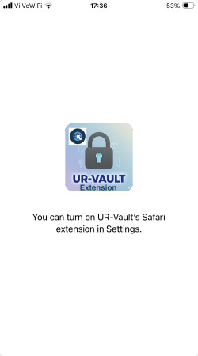
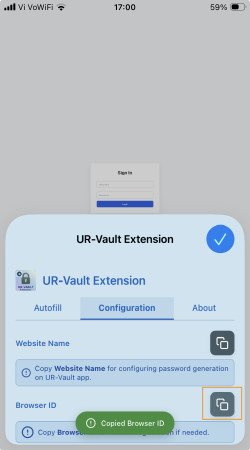
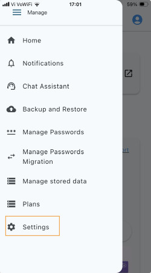
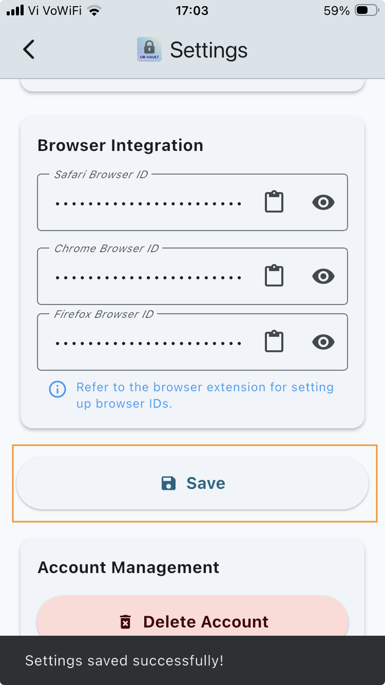
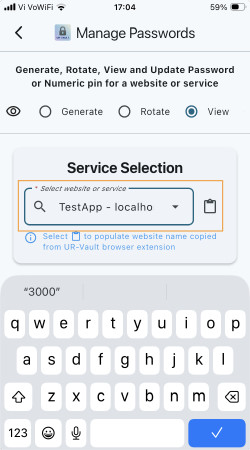
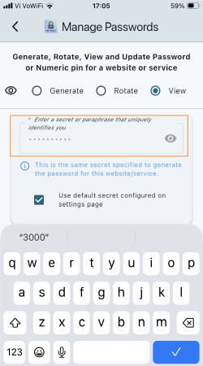
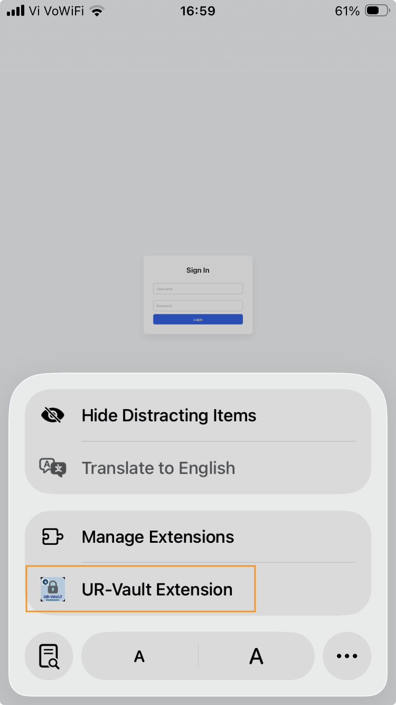
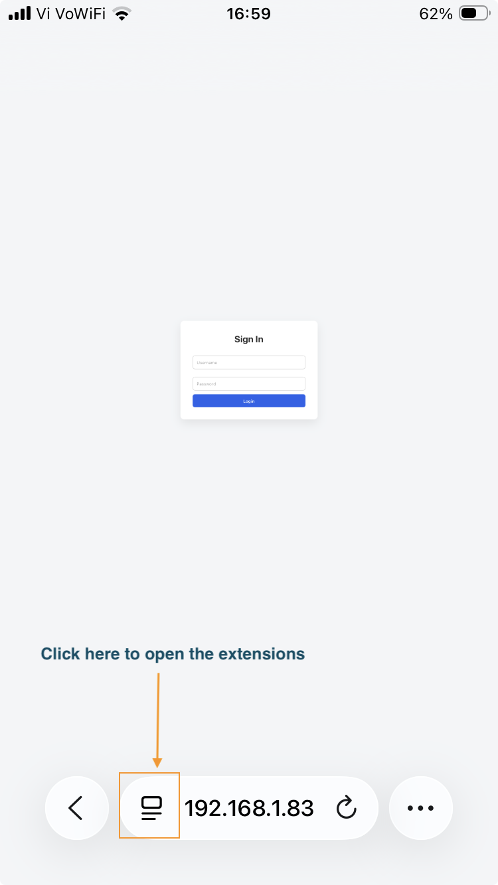
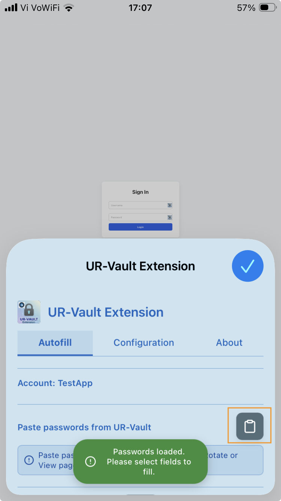
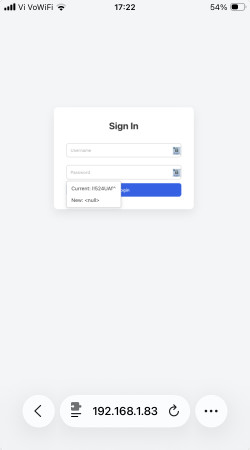

Getting Started with UR-Vault on iOS
2. Install browser extension
Click on the link for instructions to install the UR-Vault extension on the browser. The extension enables auto-fill of new and rotated passwords.
For installing browser extensions, please refer to: https://balajikadambi.github.io/UR-Vault/browser-support/.
Select Safari for iOS for installation
2.1 Configure settings on UR-Vault App for browser integration
For macOS, there is an option for the browser to register itself with UR-Vault App. For iOS, please follow the manual steps below.
Open the UR-Vault extension App for Safari.

Copy the Browser ID on the Configuration tab.

Go to Settings on UR-Vault App.

Paste the Browser ID for Safari.

Save settings.

3. Password generation for a website
The procedure is the same as for macOS. Please refer this link to generate a password configuration for a website and save on the UR-Vault App.
4. Autofill passwords for a website
Generate the password for the website or service from the stored configuration. Go to Manage passwords on the UR-Vault App and select View option.
Select the details for the website or service.


Generate the password.

Click on Extensions icon on the broswer URL bar.

Click on the UR-Vault extension.

Paste the passwords that have been copied.

Now the username and passwords are available on the webpage for autofill.
Autofill username.

Autofill password.

5. Rotate password for a website
The procedure is the same as for macOS. Please refer this link to rotate a password configuration for a website and save on the UR-Vault App.
6. Migrate passwords from other providers
The procedure is the same as for macOS. Please refer this link to migrate passwords from other providers and save on the UR-Vault App.
7. Manage stored data
The procedure is the same as for macOS. Please refer this link to manage stored data on the UR-Vault App.
8. Backup and restore websites data
The procedure is the same as for macOS. Please refer this link to backup and restore websites data on the UR-Vault App.